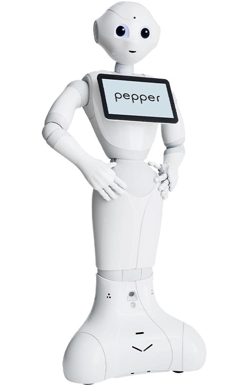

In a Human-Robot Interaction course, our group of three designed and implemented the Pepper robot to serve as a sales assistant in a cafe using both movments, verbal audio and an interactive interface that enabled the customer to interact with the robot to order food. The implementation was conducted in Choregraphe, and the UI design was created in Figma. It was a challenging and fun project, as it was the first time any of us had implemented a robot. However, when we got it to work, it was exciting to see the robot perform the tasks we had programmed.

In a team of three students, we got a task to implement the pepper robot using choreograph to act as a cafe assistant.
It was the first time for all three of us working with robots, and it was challenging to implement the Pepper robot in Choregraphe due to the system being outdated and lacking sufficient documentation. Additionally, the Pepper robot frequently encountered system errors, making it difficult to determine whether the issues were caused by our program or the robot itself.
Despite the challenges, the project was enjoyable, and we were all satisfied with the result as we ultimately got everything to work as intended.
When a customer approached Pepper within a 2-meter radius, the robot welcomed them and asked what they would like to order. The customer could choose to place their order either by voice or using the touchscreen. Using a global variable, the customer could order multiple items, and Pepper could even ask follow-up questions about the order, such as whether the customer wanted milk in their coffee.
To enhance the robot's interaction, we implemented movements for Pepper to improve the Human-Robot Interaction.